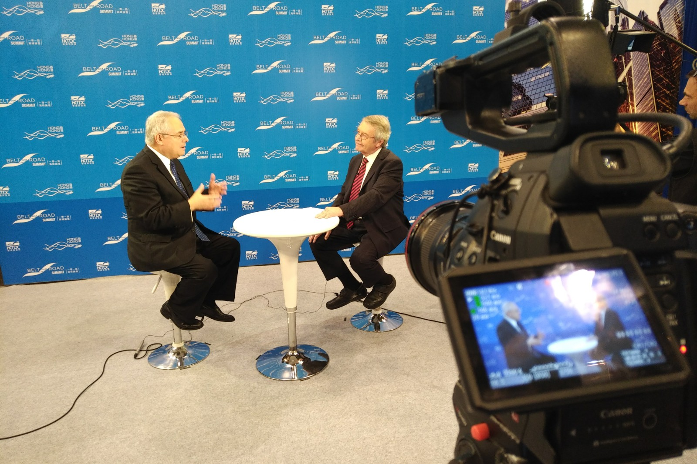

The World's Best Public-Private Partnership Law
Recently, a client with a development agency asked me “What is the best Public-Private Partnership Law in the world?”
My joking response was “Whichever PPP Law I am currently working on with a client country!” On a more serious note however, the question did cause me to reflect on the elements that make a PPP Law particularly effective.

So, what are the key ‘chapter topics’?
In my view, every PPP law should address the following topics, ideally in separate chapters, in something like this order:
- an Introduction chapter, setting out the objectives and scope of the Act;
- a chapter on Institutional Coordination and Responsibilities; and
- a series of chapters dealing with the different phases of the PPP Project Cycle.
Streamlining the PPP Process: Meeting the ‘Abundance’ ChallengeLecture · 23 April 2026 · PDF